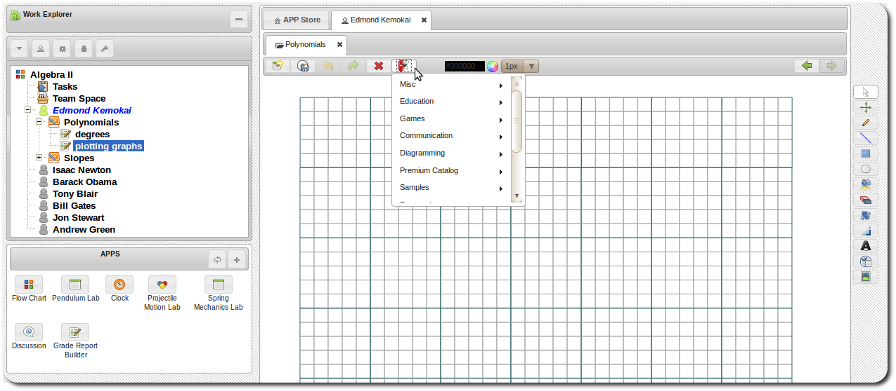

APPs
Creating APPs
Creating APPs
APPs can be added either to the Home item or to categories including system categories.
-
Right click Home item.

Or right click on any non-system category.

-
Select New APP to reveal APP setting dialog.
-
The new APP is created and would be listed in the navigation panel.
-
The APP's interface template code can be accessed by clicking the item APP under the APP folder.
Testing APPs
During development you can test your APPs in the workspace. Developers can access their APPs in the workspace
from the dev APPs menu:

Drag & Drop APPs
- APPs can be reorganized by dragging and dropping an APP to a category. Note that APPs can be dragged and dropped to both system and non-system categories.
Deleting APPs
-
Right click a APP item.
- Select Delete. Note that this would not undeploy the APP if it has been deployed.